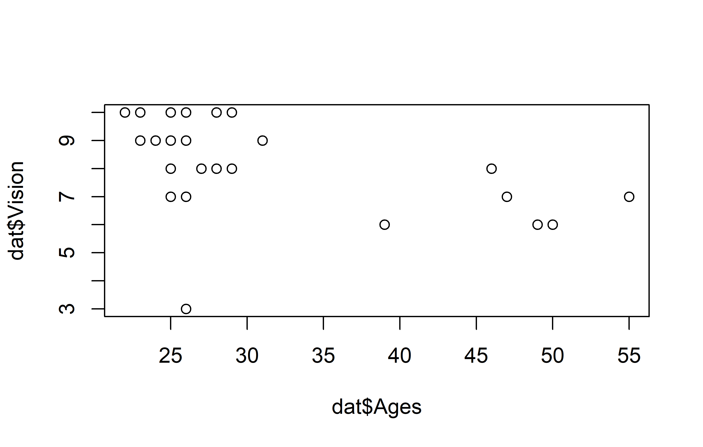

pacman::p_load(
broom,
conflicted,
here,
janitor,
readxl,
tidyverse
)Bad data & Outliers
Paul Schmidt ![]()
There are two download links:
Data
Imagine that this dataset was obtained by you. You spent an entire day walking around the campus of a university and asked a total of 29 people for things like how old they are (Ages) and you also tested how well they could see on a scale of 1-10 (Vision).
Import
Assuming you are working in a R-project, save the formatted file somewhere within the project directory. I have saved it within a sub folder called data so that the relative path to my file is data/vision_fixed.xls.
path <- here("data", "vision_fixed.xls")
dat <- read_excel(path)
dat# A tibble: 29 × 9
Person Ages Gender `Civil state` Height Profession Vision Dista…¹ PercD…²
<chr> <dbl> <chr> <chr> <dbl> <chr> <dbl> <dbl> <dbl>
1 Andrés 25 M S 180 Student 10 1.5 15
2 Anja 29 F S 168 Professio… 10 4.5 45
3 Armando 31 M S 169 Professio… 9 4.5 50
4 Carlos 25 M M 185 Professio… 8 6 75
5 Cristina 23 F <NA> 170 Student 10 3 30
6 Delfa 39 F M 158 Professio… 6 4.5 75
7 Eduardo 28 M S 166 Professio… 8 4.5 56.2
8 Enrique NA <NA> <NA> NA Professio… NA 6 NA
9 Fanny 25 F M 164 Student 9 3 33.3
10 Francisco 46 M M 168 Professio… 8 4.5 56.2
# … with 19 more rows, and abbreviated variable names ¹Distance, ²PercDistGoal
Very much like in the previous chapter, our goal is to look at the relationship of two numeric variables: Ages and Vision. What is new about this data is, that it (i) has missing values and (ii) has a potential outlier.
Exploring
To quickly get a first feeling for this dataset, we can use summary() and draw a plot via plot() or ggplot().
summary(dat) Person Ages Gender Civil state
Length:29 Min. :22.00 Length:29 Length:29
Class :character 1st Qu.:25.00 Class :character Class :character
Mode :character Median :26.00 Mode :character Mode :character
Mean :30.61
3rd Qu.:29.50
Max. :55.00
NA's :1
Height Profession Vision Distance
Min. :145.0 Length:29 Min. : 3.000 Min. :1.500
1st Qu.:164.8 Class :character 1st Qu.: 7.000 1st Qu.:1.500
Median :168.0 Mode :character Median : 9.000 Median :3.000
Mean :168.2 Mean : 8.357 Mean :3.466
3rd Qu.:172.8 3rd Qu.:10.000 3rd Qu.:4.500
Max. :190.0 Max. :10.000 Max. :6.000
NA's :1 NA's :1
PercDist
Min. : 15.00
1st Qu.: 20.24
Median : 40.18
Mean : 45.45
3rd Qu.: 57.19
Max. :150.00
NA's :1 Click to show/hide code
plot(y = dat$Vision, x = dat$Ages)
Click to show/hide code
ggplot(data = dat) +
aes(x = Ages, y = Vision) +
geom_point(size = 2) +
scale_x_continuous(
name = "Person's age",
limits = c(20, 60),
expand = expansion(mult = c(0, 0.05))
) +
scale_y_continuous(
name = "Person's vision",
limits = c(0, NA),
breaks = seq(0, 10, 2),
expand = expansion(mult = c(0, 0.05))
) +
theme_bw()
Apparently, most people are in their 20s and can see quite well, however some people are older and they tend to have a vision that’s a little worse.
Correlation & Regression
Let’s estimate the correlation and simple linear regression and look at the results in a tidy format:
cor <- cor.test(dat$Vision, dat$Ages)
tidy(cor)# A tibble: 1 × 8
estimate statistic p.value parameter conf.low conf.high method alter…¹
<dbl> <dbl> <dbl> <int> <dbl> <dbl> <chr> <chr>
1 -0.497 -2.92 0.00709 26 -0.734 -0.153 Pearson's pro… two.si…
# … with abbreviated variable name ¹alternativereg <- lm(Vision ~ Ages, data = dat)
tidy(reg)# A tibble: 2 × 5
term estimate std.error statistic p.value
<chr> <dbl> <dbl> <dbl> <dbl>
1 (Intercept) 11.1 0.996 11.2 1.97e-11
2 Ages -0.0910 0.0311 -2.92 7.09e- 3Thus, we have a negative, moderate correlation of -0.497 and for the regression we have Vision = 11.14 + -0.09 Ages.